Au bar
- Cocktails maison Au shaker, « bien exécutés » selon les habitués
- Bières pression Guinness, Carlsberg, Pilsner
- Cidre Magners Servi bien frais, sur glace
- Limonade maison L’option sans alcool, faite ici
Café-bar de quartier · Genève
À deux pas de l’université, un bar de quartier sans chichis : cocktails bien tirés, Guinness pression, tapas maison — et une terrasse qui ne désemplit pas dès les beaux soirs.
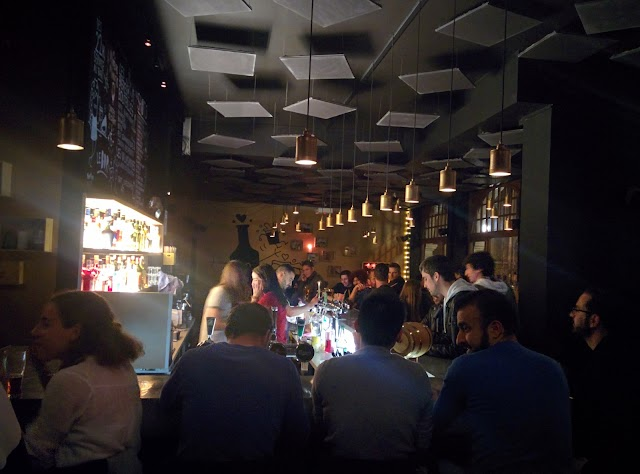
La carte
Pas de carte à rallonge : l’essentiel, fait maison quand c’est possible. Les prix vous sont communiqués au comptoir.
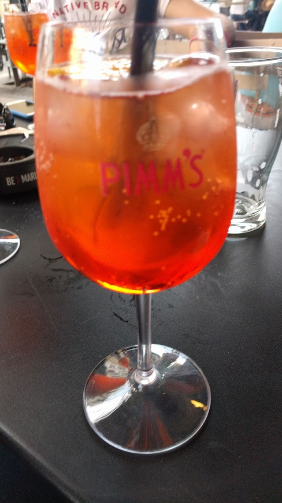
Au programme
Le BDR, ce n’est pas qu’un comptoir. Afterworks, platines et soirées qui sortent de l’ordinaire.
On pose le travail, on attaque l’apéro entre voisins et collègues.
Le dimanche, les platines tournent funk, disco et bonne humeur.
Des soirées humour où l’on rit fort, le verre à la main.
Des nuits hautes en couleur, queens à l’honneur.
La fripe s’invite au bar le temps d’un marché vintage.
Anniversaire ou groupe ? Le bar se privatise sur demande.
L’ambiance
À deux pas de la fac, rue de l’École-de-Médecine, Le Bout d’la Rue est le QG décontracté du quartier — autant pour l’apéro d’après-cours que pour l’after-work qui s’éternise.
Murs noirs, lumières chaudes, une fresque de mascottes dessinées à la main et un flipper dans le coin : l’endroit est sobre et classe, jamais guindé. On y vient pour une Guinness bien tirée, un cocktail soigné et cet accueil chaleureux que les habitués connaissent par cœur. Aux beaux jours, la terrasse fait le plein.
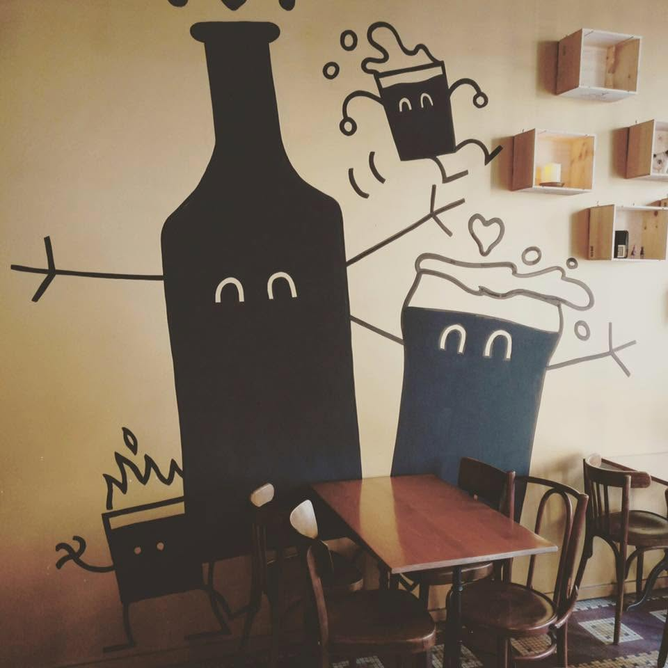
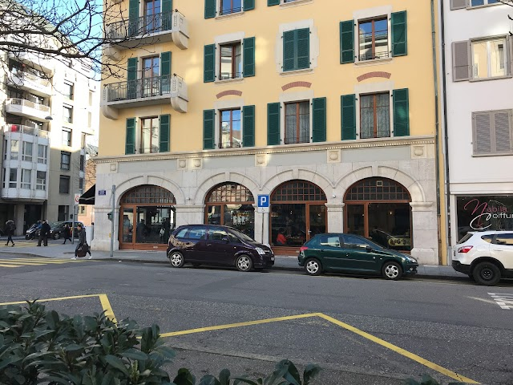
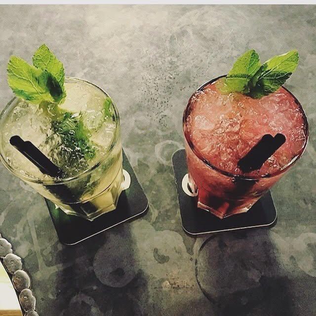
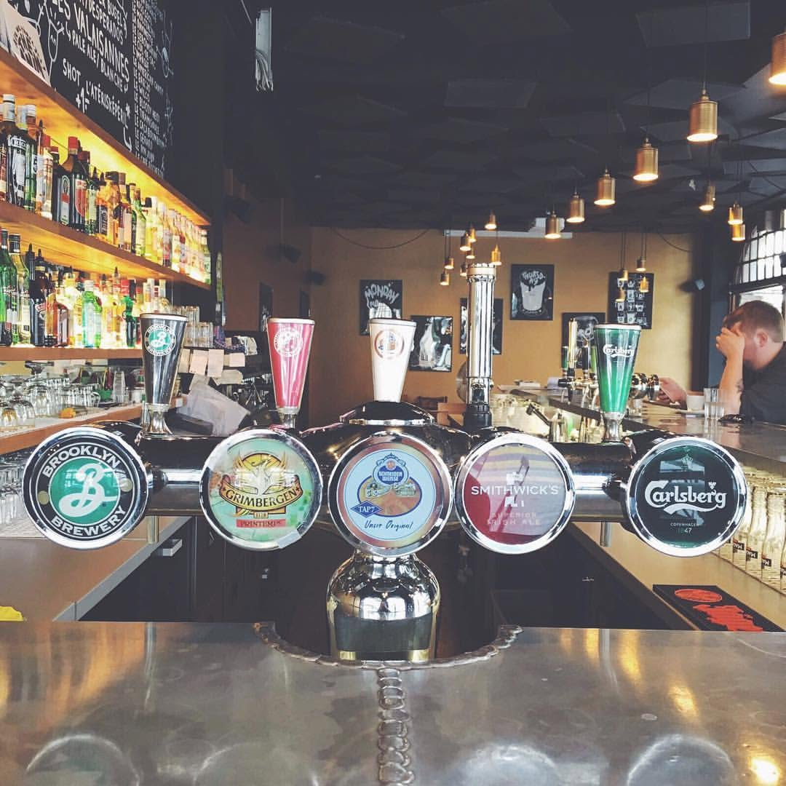
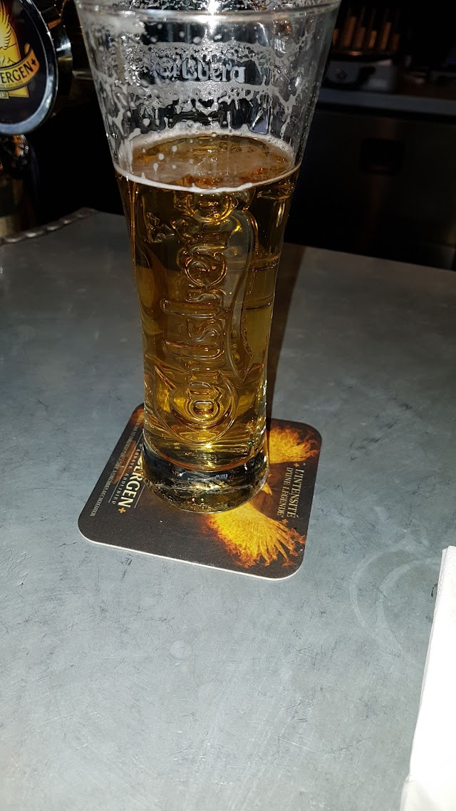
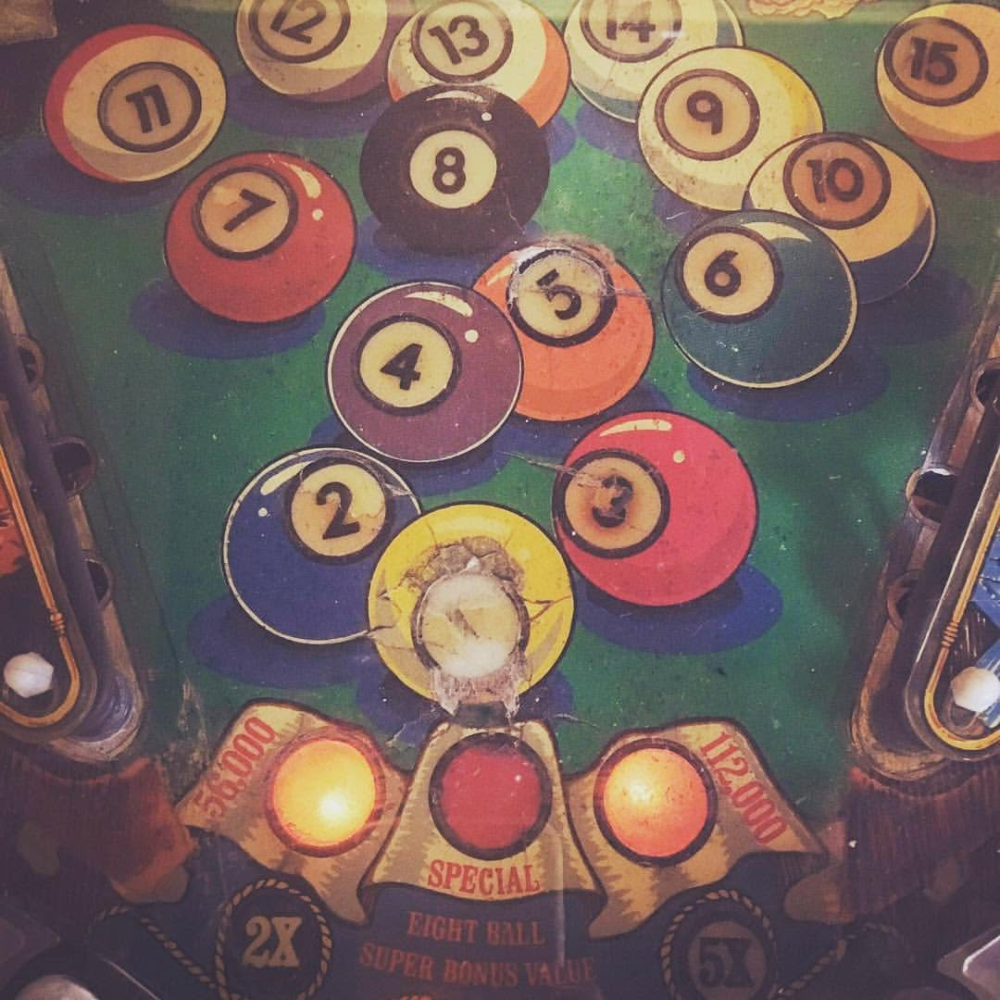
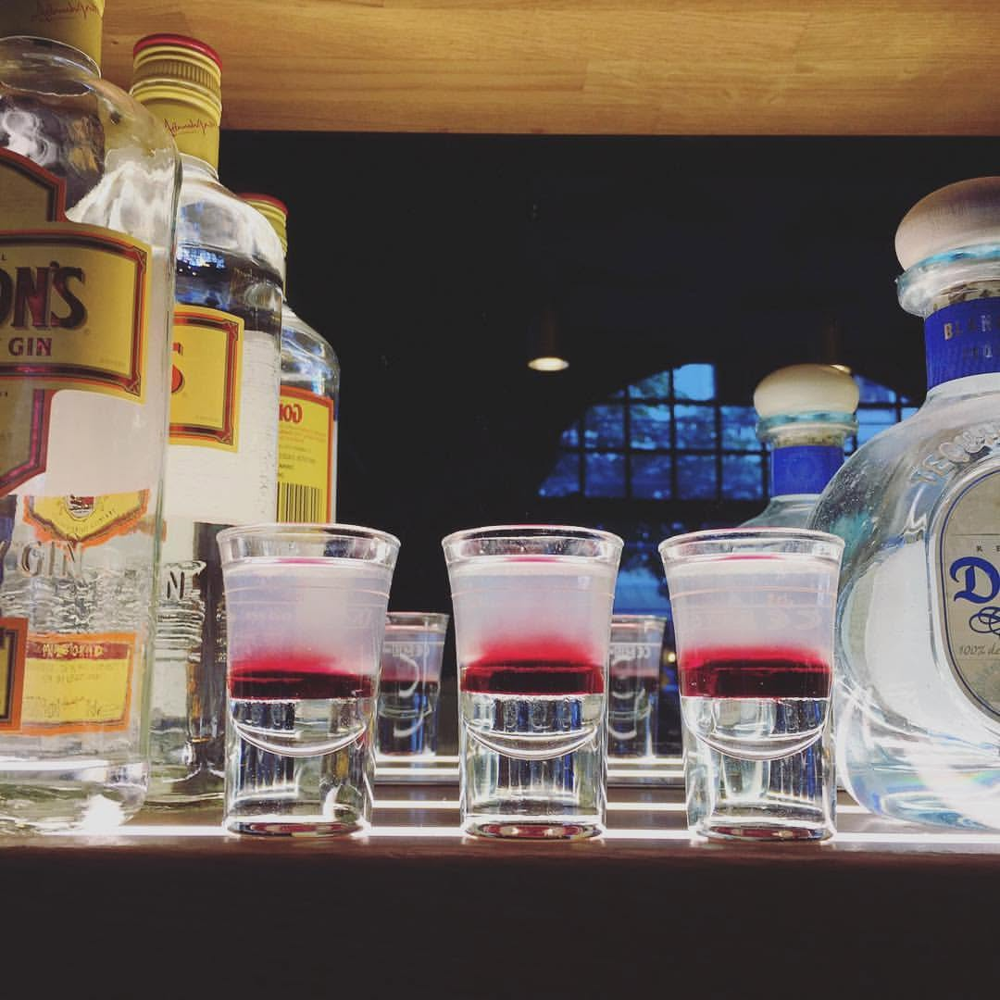
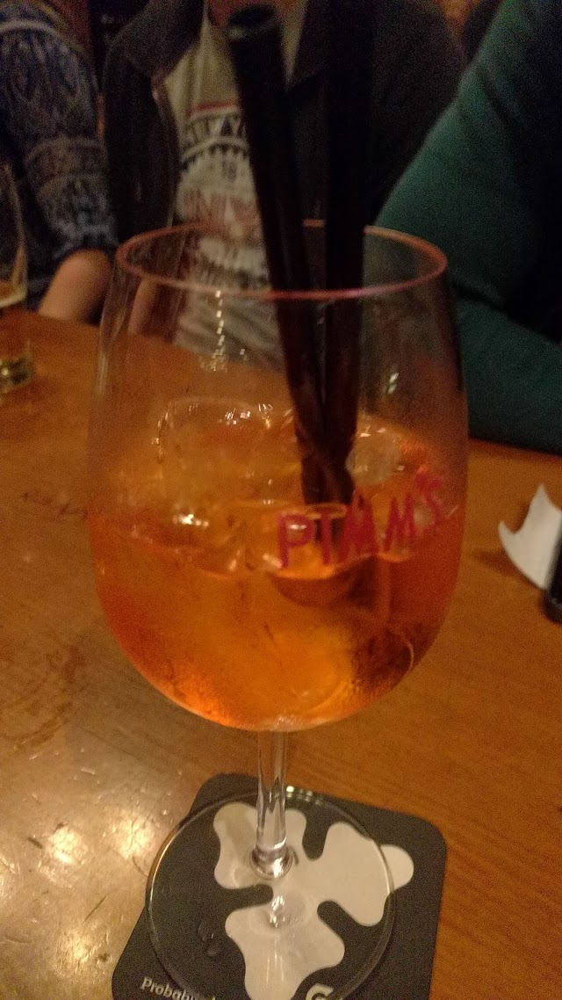
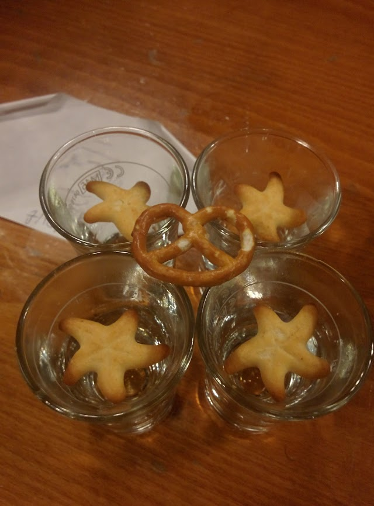
Ce qu’on en dit
Soirées stand-up et lieu de rencontre : à ne pas manquer, l’un des meilleurs bars de Genève !
★★★★★ Victoria Schmidt · juillet 2024
J’y vais surtout pour la Guinness et j’y trouve toujours un accueil chaleureux.
★★★★★ Alfonso Gómez Esperante · novembre 2023
Bonne ambiance, service excellent, rapide et sympathique, prix très raisonnables, jolie carte de cocktails bien exécutée.
★★★★★ Lo Lo · octobre 2023
Nous trouver
| Lun – Mer | 17h00 – 01h00 |
|---|---|
| Jeu – Ven | 17h00 – 02h00 |
| Sam | 18h00 – 02h00 |
| Dim | Fermé |
Horaires indiqués par le bar ; un doute le soir ? Un coup de fil avant de venir.
Contact
Une question, une privatisation, un mot doux ? Laissez-nous un message — on revient vers vous.
Le bar ouvre en fin d’après-midi : pour une réponse rapide, le téléphone reste le plus simple.